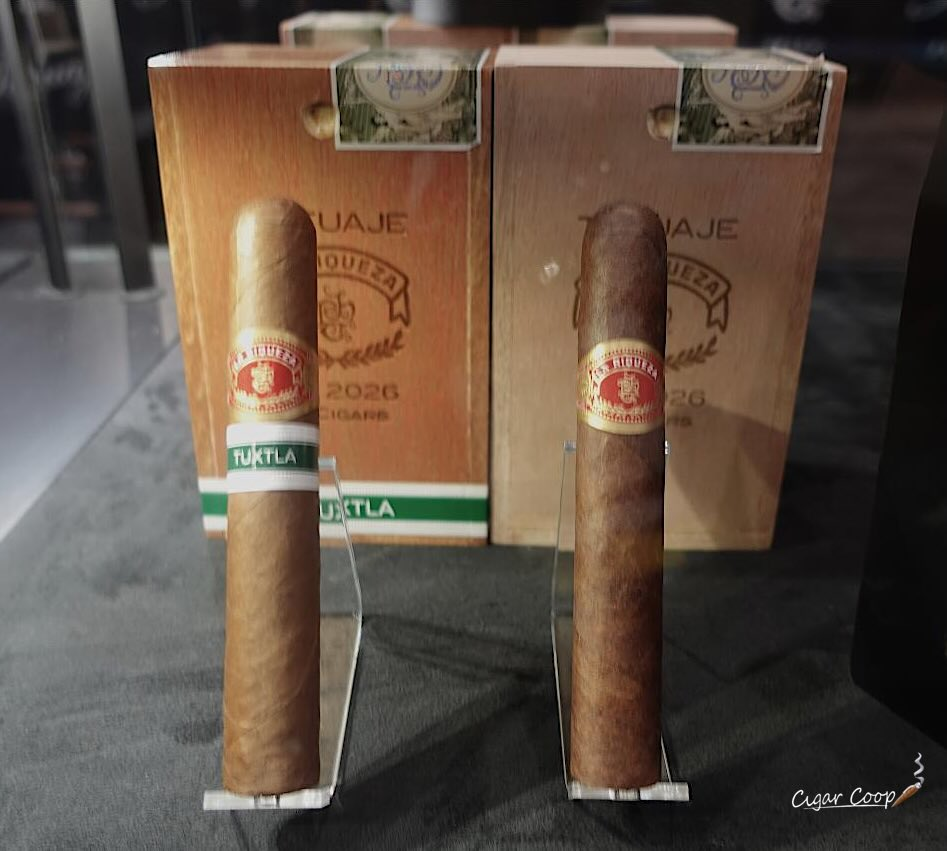

タトゥアヘ、休眠の「ラ・リケサ」を限定版で復活 — まずはカリフォルニアから
タトゥアヘが、数年間レギュラーから外れていた「ラ・リケサ」を限定版「ラ・リケサ SE 2026」として復活させ、出荷を始めました。まずはカリフォルニア州中心のごく一部の小売店への「ソフト・オープン」で、全国展開の時期は未定です。
記事全文を読む ›WORLD CIGAR NEWS & INTELLIGENCE
BEYOND HAVANA. BEYOND BORDERS.世界の葉巻を、もっと広く、もっと深く。

タトゥアヘが、数年間レギュラーから外れていた「ラ・リケサ」を限定版「ラ・リケサ SE 2026」として復活させ、出荷を始めました。まずはカリフォルニア州中心のごく一部の小売店への「ソフト・オープン」で、全国展開の時期は未定です。
記事全文を読む ›
モンスター・シリーズ通算101作目、フルサイズ14作目『クリーチャー』。6⅞×52ペルフェクトの全ニカラグア葉、マイファザー工場製で7,000箱限定。価格は映画の公開年1954年にちなむ19.54ドル。
記事全文を読む ›
タトゥアヘが、怪奇映画俳優ボリス・カーロフにちなむ「ボリス・カーロフ」を新サイズで復活させ、今週から小売店へ出荷しています。今回のトロは6¼インチ × 47RGで、歴代で最も細いサイズ。
記事全文を読む ›